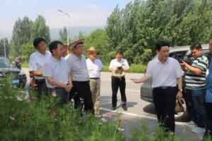
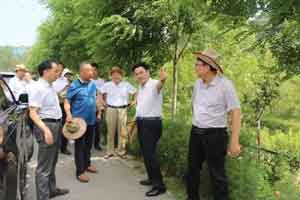
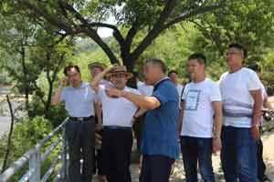
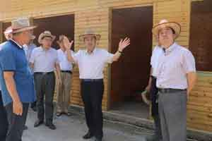
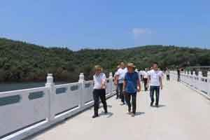
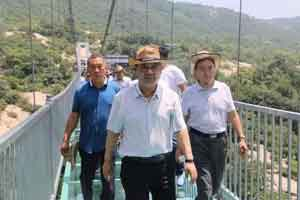
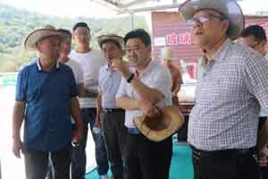

7月10日，县委书记禇清黎冒酷暑深入杨集乡七十二潭景区及其周边调研旅游产业助扶贫工作，县领导侯磊、侯金耀、包鸣彦、谭政，七十二潭景区董事长王国华陪同。


褚清黎一行先后深入七十二潭景区沿线，景区附近新打造的农家宾馆、景区内各个重要景点进行实地调研，与农户、乡镇负责同志、景区董事长王国华等深入交谈，畅议农宿宾馆、酒店、农家乐如何提升景区承载能力和服务水平，企业如何融合发展提振旅游产业，助力脱贫攻坚。


在七十二潭景区，褚清黎认真听取了董事长王国华的情况介绍并深入景区实地查看景区建设和规划发展情况。褚清黎指出，景区要坚持“统筹协调、聚焦有序、聚力有效”原则，有战略、战术性的重点发展，着眼长远，整体布局，积少成多，逐步实现，有力的通过人力、资金、时间创造累累硕果。要坚持安全为本，同时抓好景区亮化和特色文化建设，提高景区品味，丰富景区内涵。
 
近几年，在县委、县政府的正确领导和关心支持下，方城县的旅游业蒸蒸日上、日益繁荣，成为县域经济增长的新亮点。七十二潭景区作为方城旅游的先行企业，一直坚持稳步发展、科学规划，不断完善景区的配套设施，打造成具有特色的高品质的景区，为我县经济社会发展做出贡献。 要树牢群众为本的经营观念，同心同向，帮助群众发展旅游附属产业，造福乡邻。提高社会责任意识，体现担当精神，行大善，多行善，积极投身扶贫浪潮中去，为全县脱贫攻坚和经济建设做出应有贡献。 同时褚清黎强调，在“县域景区化、景区全域化、连点成线、串珠成链”的大旅游发展格局下，要让旅游链条贯三产，旅游元素进万家，围绕吃、住、行、游、购、娱发展配套产业，树立全域旅游一盘棋思想，齐力共建、抱团发展，让老百姓参与到旅游发展中来，补短板，助力旅游功能的补充、人气的提升，把旅游产业做成富民工程、扶贫工程和民生工程，实现农游结合互利共赢。
